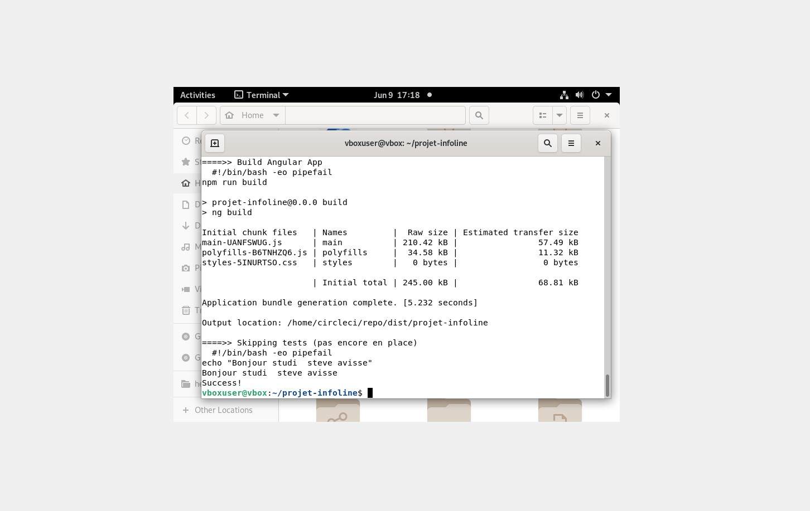
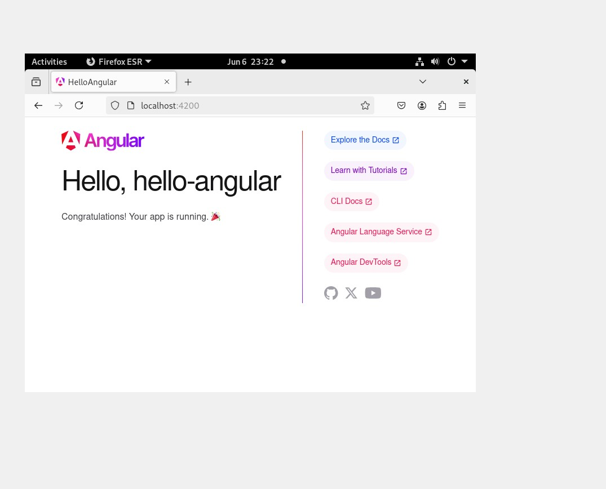
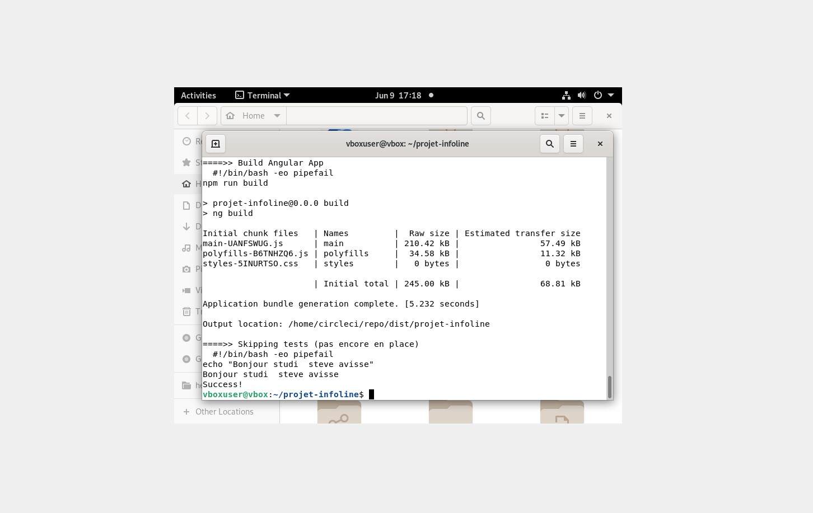
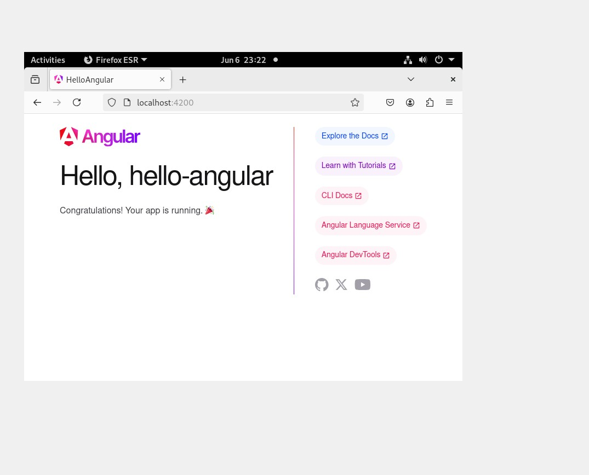

Automatisation Spring Boot → Docker → Kubernetes (Minikube) + Angular
 





E2E local : Java → Docker → K8s + Angular & CI locale
Projet de bout en bout: développement d’une API Spring Boot, packaging en Docker, déploiement sur Minikube via YAML, et validation front avec un Hello Angular. Un job CircleCI est aussi exécuté en local pour illustrer la CI. Fil rouge : montrer une chaîne Dev → Ops reproductible, entièrement en local (zéro coût cloud).
Catégorie : Dev / DevOps
Contexte : VM Debian (VirtualBox), tout en local.
Livrables : code Java, Dockerfile, deployment.yaml, service.yaml, projet Angular, .circleci/config.yml.
- Objectif pédagogique : prouver que je sais développer, packager, déployer et opérer une app Java.
- Contraintes : tout faire en local (pas de cloud payant), reproductible (commandes/script), et clairement documenté.
Ce choix “full local” m’a obligé à gérer : versions de Java/Node, droits Docker, RAM Minikube, et la CLI CircleCI.
- Back : Spring Boot (endpoint “Hello World”).
- Packaging : Docker (multi-stage → image finale légère).
- Orchestration : Kubernetes avec Minikube (Deployment + Service NodePort).
- Front : Angular (Hello Angular) pour valider l’environnement UI.
- CI : job CircleCI exécuté en local pour builder l’app Angular.
helloworld/
├── src/main/java/com/infoline/helloworld/
│ ├── HelloworldApplication.java
│ └── HelloController.java
├── Dockerfile
├── pom.xml
├── deployment.yaml
└── service.yaml
3.1 Code Spring Boot (extrait)
@RestController
public class HelloController {
@GetMapping("/hello")
public String hello() { return "Hello, World!"; }
}3.2 Build Maven — je compile et j’empaquette :
mvn clean package -DskipTests3.3 Image Docker multi-stage — première étape build, deuxième étape runtime :
# Étape 1 : build Maven
FROM maven:3.9.6-eclipse-temurin-17 AS build
WORKDIR /app
COPY . .
RUN mvn clean package -DskipTests
# Étape 2 : image exécutable
FROM eclipse-temurin:17-jdk
WORKDIR /app
COPY --from=build /app/target/*.jar app.jar
EXPOSE 8080
ENTRYPOINT ["java", "-jar", "app.jar"]docker build -t helloworld-app .
docker run -p 8080:8080 helloworld-app
# Test : http://localhost:8080/hello3.4 Minikube — démarrage + chargement de l’image locale :
minikube start --memory=4096mb
minikube image load helloworld-app3.5 Manifests Kubernetes — Deployment & Service :
apiVersion: apps/v1
kind: Deployment
metadata:
name: helloworld-deployment
spec:
replicas: 1
selector:
matchLabels:
app: helloworld
template:
metadata:
labels:
app: helloworld
spec:
containers:
- name: helloworld
image: helloworld-app
imagePullPolicy: Never # on utilise l'image déjà chargée dans Minikube
ports:
- containerPort: 8080apiVersion: v1
kind: Service
metadata:
name: helloworld-service
spec:
type: NodePort
selector:
app: helloworld
ports:
- protocol: TCP
port: 8080
targetPort: 8080
nodePort: 30080kubectl apply -f deployment.yaml
kubectl apply -f service.yaml
# Récupérer l'URL exposée
minikube service helloworld-service --url
# Exemple : http://192.168.49.2:30080#!/usr/bin/env bash
set -e
echo "### Build Maven"
mvn clean package -DskipTests
echo "### Build Docker"
docker build -t helloworld-app .
echo "### Minikube start + load image"
minikube start --memory=4096mb
minikube image load helloworld-app
echo "### Apply manifests"
kubectl apply -f deployment.yaml
kubectl apply -f service.yaml
echo "### Wait pod ready"
kubectl wait --for=condition=ready pod -l app=helloworld --timeout=120s
URL=$(minikube service helloworld-service --url)
echo "App OK -> $URL"
curl -s $URLCe script me permet de rejouer la chaîne complète en une commande.
# Prérequis : Node 20+
npx @angular/cli@latest new hello-angular
cd hello-angular
npm start
# http://localhost:4200But : s’assurer que mon environnement Front est viable (CLI, dépendances, serveurs) et montrer que je peux aussi “toucher” à la couche UI.
.circleci/config.yml (extrait) :
version: 2.1
jobs:
build-and-test:
docker:
- image: cimg/node:20.19.1
steps:
- checkout
- run: npm ci
- run: npm run build
- run: echo "Bonjour studi — Steve Avisse"
workflows:
build:
jobs:
- build-and-test# Lancer le job en local (nouvelle CLI, sans --job)
circleci local execute build-and-testPoints clés résolus :
- Version Node insuffisante →
cimg/node:20.19.1. - Espace disque VM limité → extension du VDI + GParted.
- Option CLI obsolète → syntaxe
circleci local execute build-and-test.
Nettoyage :
kubectl delete -f service.yaml
kubectl delete -f deployment.yaml
minikube stop
minikube delete- Résultat : image Docker fonctionnelle, pods stables, service exposé, Angular opérationnel, CI locale OK.
- REX : toujours vérifier
JAVA_HOME, les droits Docker (sudo/groupe), et la cohérence des versions (Node/Angular).